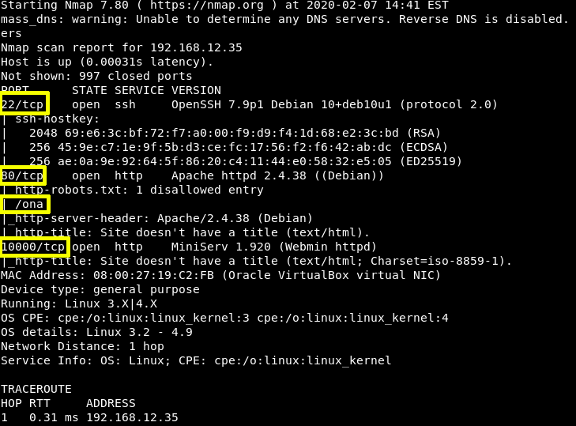

2. Finding Services and Ports
$ nmap -A 192.168.12.33
Output:

As a result we found multiple open ports and services such as: 22, 80, and 10000 are running across them.
But there's a “disallowed entry” in http-robots.txt called “ona”.
Index
 Index
Index